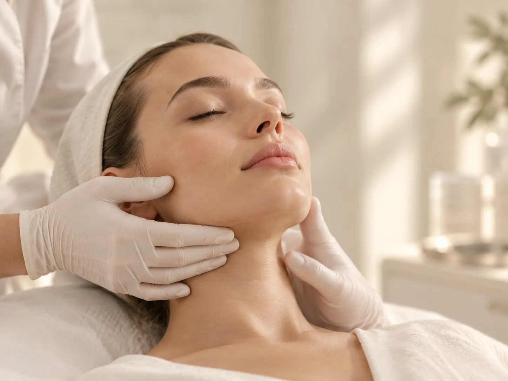

БояринцеваЮлия Игоревна
Врач-дерматовенеролог-косметолог
Диагностика и лечение заболеваний кожи, практическая, клиническая и аппаратная косметология
- Опыт
- 17 лет
Кожа и внешность
Филлеры на основе гиалуроновой кислоты: губы, носогубные складки, нехирургический лифтинг.
Контурную пластику проводит врач-косметолог. Он оценивает черты лица, предлагает зоны и количество препарата, предупреждает о противопоказаниях. Консультация перед процедурой — бесплатно.

Контурная пластика — это введение филлеров на основе гиалуроновой кислоты, чтобы восполнить объём или сгладить складки. Процедуру проводит врач-косметолог клиники 8.0.8 в Москве, у метро «Римская». Записаться можно ежедневно с 9:00 до 21:00.
Чаще всего с контурной пластикой приходят, чтобы скорректировать губы или заполнить носогубные складки. Какие зоны подходят именно вам и сколько препарата понадобится, врач решает на консультации. Она бесплатна.
Отдельно в прайсе есть нехирургический лифтинг препаратами, которые стимулируют выработку собственного коллагена (полимолочная кислота). Какой метод подходит, врач решит на консультации.
Врач расскажет:
Филлеры в косметологии — это гели, которые вводят под кожу, чтобы восполнить объём или сгладить складку. Филлеры для контурной пластики в 8.0.8 сделаны на основе гиалуроновой кислоты. Это вещество есть в коже сама по себе, поэтому организм постепенно рассасывает такой гель.
Филлеры различаются плотностью. Мягкий гель подходит для тонких зон и деликатной коррекции, плотный — там, где нужно больше поддержки. Поэтому препарат выбирают под зону, а не наоборот. Какие зоны подходят вам, подбирает врач на консультации.
Контурную пластику часто путают с другими процедурами. Биоревитализация тоже использует гиалуроновую кислоту, но жидкую: она увлажняет кожу и не меняет объём. Ботулинотерапия расслабляет мышцы и работает с мимическими морщинами, а не со складками от потери объёма.
Главная подготовка — консультация: врач оценит черты лица, выслушает пожелания и проверит противопоказания. За несколько дней до процедуры откажитесь от алкоголя и не планируйте на ближайшие дни важных событий.
Губы после увеличения и другие зоны после филлера в первые дни обычно отекают, могут появиться небольшие синяки. Отёк губ часто бывает заметнее, чем в других зонах. Окончательную форму оценивают не сразу, а когда отёк пройдёт, на контрольном осмотре.
Контурную пластику не проводят или откладывают, если есть:
Обычные реакции после процедуры — отёк, покраснение, чувствительность и небольшие синяки в местах уколов. Они проходят сами за несколько дней.
Сразу звоните в клинику, если кожа в зоне процедуры побледнела, посинела или покрылась пятнами, боль усиливается, а не уходит, или появились температура и сильный отёк.
Стоимость указана за препарат и зависит от его вида и объёма. Консультация врача перед процедурой — бесплатно.
Все ценыСтоимость указана за препарат и зависит от его вида и объёма. Консультация врача перед процедурой — бесплатно.
Все ценыВрач-дерматовенеролог-косметолог
Диагностика и лечение заболеваний кожи, практическая, клиническая и аппаратная косметология
Стоимость считается за препарат: от 21 500 ₽ за 0,8 мл, филлеры объёмом 1 мл — от 24 000 до 28 000 ₽. Канюля — 1 200 ₽, обезболивающий крем — от 600 ₽ за зону. Консультация перед процедурой бесплатна.
По телефону +7 (995) 656-33-96, ежедневно с 9:00 до 21:00.
В клинике 8.0.8: ул. Сергия Радонежского, 15–17, стр. 2, этаж 1. Рядом станции метро «Римская» и «Площадь Ильича».
Гели на основе гиалуроновой кислоты, которые вводят под кожу, чтобы восполнить объём или сгладить складку.
Стоимость зависит от препарата и объёма: контурная пластика — от 21 500 ₽ за препарат. Подходит ли вам коррекция губ и сколько препарата нужно, врач скажет на консультации.
Да, заполнение носогубных складок — одна из частых задач контурной пластики. Насколько можно сгладить складку и нужен ли для этого филлер, врач оценит на консультации.
В первые дни не трогайте и не массируйте губы, не ходите в баню и сауну, откажитесь от интенсивного спорта, алкоголя и очень горячей еды. Точные рекомендации даст врач.
Обычно несколько дней, на губах он бывает заметнее. Если отёк усиливается или появилась сильная боль, сразу позвоните в клинику.
Гиалуроновая кислота постепенно рассасывается. Срок зависит от препарата, зоны и особенностей организма, ориентир для выбранного препарата назовёт врач.
Перед процедурой зону обезболивают. Иногда врач использует канюлю — тонкую гибкую трубку вместо иглы.
Имеются противопоказания. Необходима консультация специалиста.